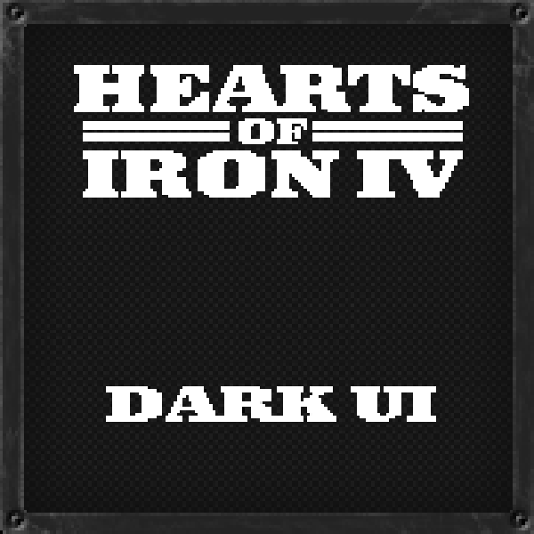

Dark UI
Dark UI is a W.I.P mod that replaces the game GUI. A Hearts Of Iron IV Mod.
As a Computer Science student at Telkom University, I’m passionate about applying analytical thinking and creativity to solve challenges, whether through tech projects, organizational work, or brand storytelling.
I’m Moreno Cello Rhythm, an Informatics undergraduate student at Telkom University with a passion for technology, organization, and meaningful impact. Currently a member of AIESEC in Bandung’s Brand Marketing team, I explore how structure and creativity can work hand in hand to create positive change.
Focus areas: analytical problem-solving, project management, marketing strategy, and continuous learning.
A few projects that balance utility and elegance.
Organization that I am in
Open to collaborations and interesting problems.